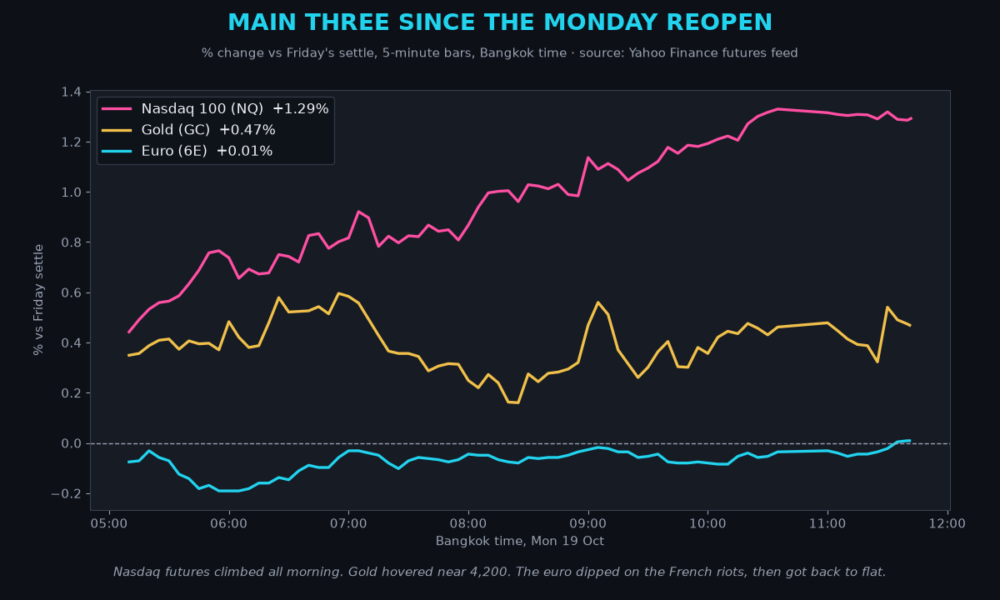
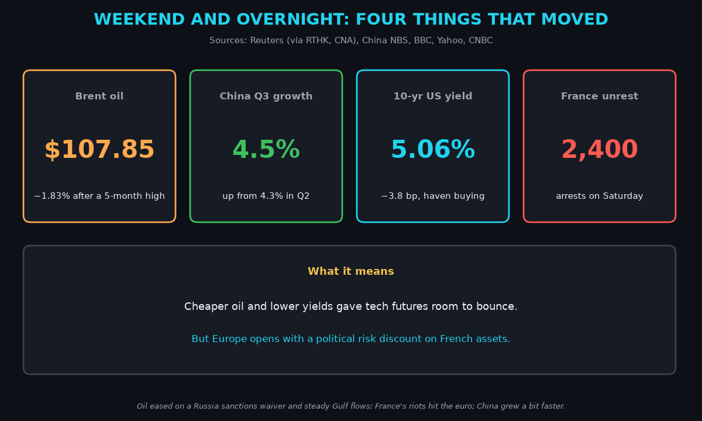
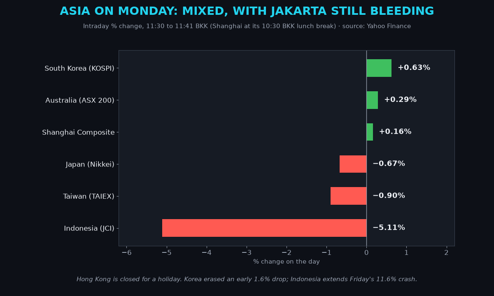
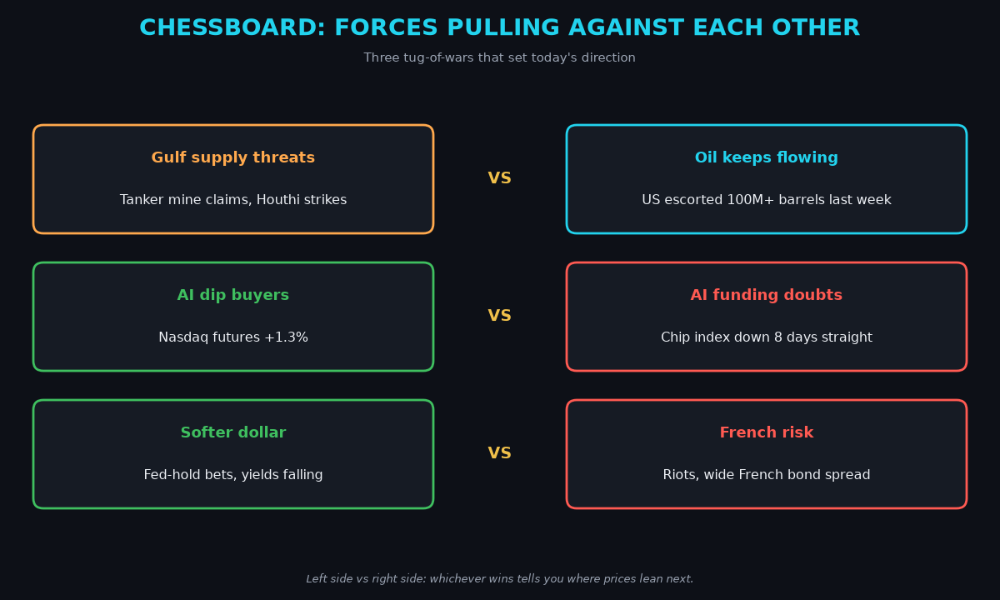
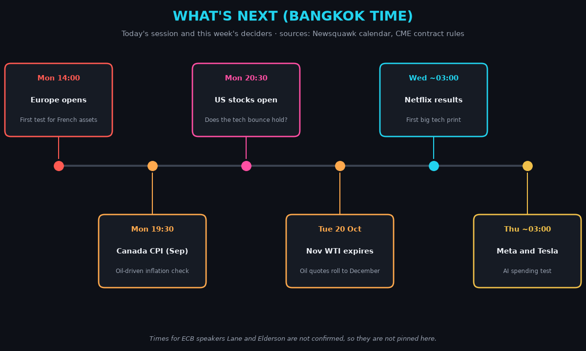
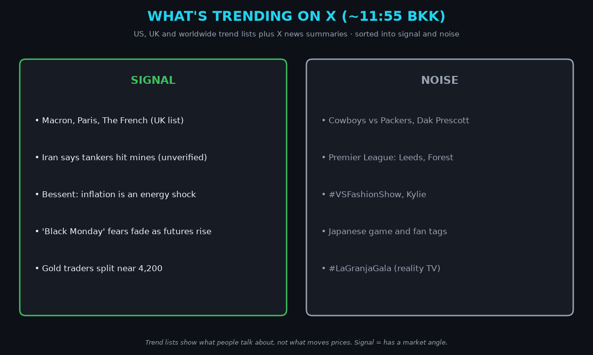

April · Market Intel, pre-London · Mon Oct 19, 2026 · ~11:58 BKK / ~05:58 London
Headline: tech futures bounced after the worst week since June, gold is sitting on $4,200, and France's weekend riots are a new weight on the euro.
Nasdaq futures are up 1.29%. Oil eased on a Russia sanctions waiver and steady Gulf flows. The 10-year US yield slipped to 5.06%. So what: the weekend did not bring the "Black Monday" some feared, but Europe opens into a political risk story.
1) Main instruments The three main contracts since futures reopened at 05:00 BKK. Nasdaq futures climbed all morning, while the euro dipped early on the French riots and then recovered. |
(Futures are contracts that trade nearly around the clock, so they show the mood before markets open. Quotes are from the Yahoo Finance futures feed at 11:41 BKK (04:41 UTC), about 10 minutes delayed.)
- Gold futures (GC, Dec): 4,200.7, +0.47%, at 11:41 BKK. Driver: falling US yields and safe-haven buying as AI stocks wobble. Gold pays no interest, so lower yields make it cheaper to hold. This morning's range is 4,187.8 to 4,206.0.
- Nasdaq 100 futures (NQ): 29,771.25, +1.29%, at 11:41 BKK. Driver: bargain hunting after the Nasdaq Composite fell 2.14% on Friday and about 4.5% on the week, its worst week since June. Cheaper oil helps. It is still well below Thursday's level near 30,200.
- Euro futures (6E, Dec): 1.12605, +0.01%, at 11:41 BKK. Driver: a softer dollar is fighting French riot risk. The spot euro is 1.1235 (−0.08%). It briefly hit 1.1191 on Sunday (DeItaone via 24/7 Wall St). The futures low this morning was 1.1238.
- Takeaway: the bounce is real but narrow. Gold and tech both depend on yields staying low, and the euro now has a France problem.
Context. The dollar index (DXY, the dollar against six major currencies) is 101.80, −0.04% (Yahoo, 11:41 BKK). The 10-year US yield (what the US government pays to borrow for 10 years) is 5.06%, down 3.8 basis points (CNBC, 11:52 BKK; a basis point is 0.01 percentage point). It just had its biggest weekly fall in over eight months (Reuters). The VIX (the "fear gauge" built from option prices) closed Friday at 19.99, +21.45%, after topping 22 intraday for the first time in four months (CNBC). US oil (CL, December contract) is 97.50, −1.54%; the November contract is 100.27, −1.12% and expires Tuesday. Brent (the global oil benchmark) is 107.85, −1.83%. S&P 500 futures (ES) are 7,762.50, +0.76% (11:41 BKK). Bitcoin is $82,745, +0.89% since 00:00 UTC (Yahoo, 11:52 BKK).
2) Top signals Four weekend and overnight moves. Cheaper oil and lower yields helped tech, while France's unrest set up a tense European open. |
- Oil eased from a five-month high. Trump waived some Russia sanctions and tariffs, which could free more Russian fuel. Rubio said the final call may take up to 60 days. (High: Reuters via ET, RTHK)
- France had its worst unrest in years. About 550,000 marched; police made 2,400 arrests and nearly 1,000 officers were hurt. Macron called for calm but did not declare an emergency. (High: Reuters, BBC)
- China grew 4.5% in Q3, up from 4.3%, a bit above forecasts. Markets barely reacted. (High: China NBS, CNBC)
- Takeaway: oil and yields gave stocks a break, but politics in Europe is the new risk.
3) Why it matters Asia at about 11:30 BKK. Korea erased an early drop, Japan and Taiwan stayed red on chip worries, and Indonesia kept falling. |
The AI selloff is now a funding story, not a demand story. Investors are asking whether AI revenue can pay for the data centers, chips and power being built.
- Higher bond yields make that borrowing more expensive. That is why tech fell hard last week. (AMP and NAB economists, via Reuters and AFP)
- Japan's Nikkei is −0.67% and Taiwan −0.90%. Korea's KOSPI turned +0.63% after an early 1.6% drop. Hong Kong is closed for a holiday. (Yahoo, Reuters)
- For the euro, the risk is French borrowing costs. The gap between French and German 10-year yields topped 150 basis points, the widest since 2011. (Medium: FXStreet)
- Mentor: when a country's bond yields rise faster than its neighbors', investors are charging extra for political or debt risk. That extra cost tends to pull its currency down too.
- Takeaway: lower yields are the oxygen for both gold and tech this week.
4) Chessboard Three tug-of-wars. The winners set the direction for oil, tech stocks and the euro. |
- Gulf threats vs oil still flowing. Iran's Revolutionary Guard says two supertankers hit mines near Oman. That is unverified. UKMTO, the UK maritime agency, reported two tankers hit in the Gulf. But the US says it escorted over 100 million barrels through Hormuz last week. (Medium: CNBC TV18, X news)
- Dip buyers vs AI funding doubts. Nasdaq futures are up, but the chip index fell eight straight days through Friday, its longest losing streak since 2008. (NBC)
- Softer dollar vs French risk. Fed-hold bets weaken the dollar. French riots and wide bond spreads weaken the euro. For 6E, these cancel out for now.
5) Leading indicators (BKK times) Today's session and this week's deciders in Bangkok time. Europe's open and the US open decide Monday; Meta and Tesla decide the week. |
- 14:00: Europe opens. Watch French stocks, banks and bonds for the first riot reaction.
- 19:30: Canada September inflation. A hot number would feed the oil-inflation story.
- 20:30: US stocks open. The test is whether the futures bounce holds.
- ECB's Lane and Elderson speak today. Times are not confirmed.
- Tuesday: November WTI expires. Oil quotes roll to December.
- Wednesday ~03:00: Netflix results. Thursday ~03:00: Meta and Tesla.
- Levels to watch: GC 4,200 (gold keeps failing to hold it). NQ 30,000 (a round number above). 6E 1.1200 and 1.1300. 10-year 5.00%. DXY 102. Brent $105 and $110.
- Takeaway: Europe's open at 14:00 BKK is the first real test of the euro.
6) Undercovered
- Indonesia is still in free fall. The JCI is −5.11% today after an 11.6% crash on Friday. MSCI may move it out of "emerging market" status, which can force funds to sell. (High: Reuters via RTHK, Yahoo)
- Moody's reviews France on Friday. A downgrade after the riots would hit the euro. (High: Newsquawk calendar)
- Gulf crude flows fell to about 8.5 million barrels a day on a seven-day average, from over 20 million the week before. (Medium: Kpler via ET)
- India's markets are bleeding foreign money. Over $33 billion has left this year, says its finance minister. (Medium: X news summary of a CNBC interview)
7) What's trending on X (~11:55 BKK) Live X trends sorted into signal and noise. France's riots are the only market story on the UK trend list. |
- US: Cowboys, Dak Prescott, #GoPackGo, #VSFashionShow.
- UK: Macron, Paris, The French, Leeds, #NFOARS.
- Worldwide: NFL tags, Brazilian and Japanese fan tags, #LaGranjaGala.
- Signal: France's riots. Iran's mine claims (unverified). Treasury Secretary Bessent called inflation an energy shock from the Iran conflict. "Black Monday" crash fears on the 1987 anniversary faded as futures rose.
- Gold chatter is split near 4,200, with many sell setups. Treat it as mood, not evidence.
- Noise: NFL, Premier League and fashion shows.
Bottom line
A relief bounce on cheaper oil and lower yields. Europe's open at 14:00 BKK and the US open at 20:30 BKK decide whether it lasts. For Jim: gold needs yields under 5.10% to break 4,200 for real. The euro is stuck between a soft dollar and French risk; 1.1200 is the floor to watch. Interpretive note: today is the 39th anniversary of the 1987 crash. Anniversaries move timelines, not prices, and the futures agree.
Confidence: Friday closes, oil moves, China GDP and France arrest figures are high. Futures quotes from the Yahoo feed are high for direction and medium for exact level. The French bond spread is medium. Iran's mine claims are unverified. X news summaries are medium. |